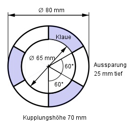

Aufgabe 169 Berechnen Sie die Masse m der Klauenkupplung (Dichte 7,2 kg/dm3).

Volumen des Hohlzylinders ohne Aussparungen: raußen = 80 mm/2 = 40 mm rinnen = 65 mm/2 = 32,5 mm VHohlzylinder = π * (raußen2 - rinnen2) * h VHohlzylinder = = π * (402 mm2 - 32,52 mm2) * 70 mm VHohlzylinder = 119 516 mm3 = 119,5 cm3 Volumen der 3 Aussparungen: 3 * Hohlzylinder * 25 mm VAussparungen = --------------------------- 6 VAussparungen = π * (raußen2 - rinnen2) = 3 * ------------------------- * 25 mm 6 VAussparungen = π * (402 mm2 - 32,52 mm2) = 3 * --------------------------- * 25 mm 6 VAussparungen = 21 342 mm3 = 21,34 cm3 VKupplung = VHohlzylinder - VAussparungen = = 119,5 cm3 - 21,34 cm3 VKupplung = 98,16 cm3 m = VKupplung * р р = 7,2 kg/dm3 = 7,2 g/cm3 m = 98,16 cm3 * 7,2 g/cm3 = 706,8 g